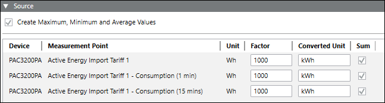

Report Workspace
In Operating mode, you can work with Powermanager reports using the Report Definition Configuration expander.
The following expanders help you in configuring the reports:
Main Expander
This expander displays the type of report selected.
Scheduling Report Configuration Expander
This expander allows you to configure the following parameters for scheduling a report.
- Enable Schedule Report: Allows you to activate the configuration for routing the selected report to an email group or to a folder in the local memory.
- Username: Select the username from the drop-down list to continue with the configurations.
- Schedule Interval: Allows you to select the interval for the routing of the report.
- Next schedule: Displays the date and time of the routing schedule. You can also select the scheduling date and time from this drop-down.
NOTE: In the Source expander, if the measurement point with Consumption (1 day) is configured, then while scheduling report in the Scheduling Report Configuration expander, the default scheduling time for the selected date will be 12:00 AM. This must be changed to 12:05 AM to get the complete report in the scheduled report for the selected duration. - Report File type: Allows you to select the format of the generated scheduled report. You can generate a report as either a PDF or EXCEL.
- E-mailing list: Allows you to select the email group to which the report will be routed.
- Report Save Location: Allows you to select the location of the folder in the local memory the report is routed to.
- Report Parameters: Allows you to configure the report parameters to be included in the scheduled report. The options include the following:
- Duration: Select the duration from the following to schedule the report:
- Day
- Week
- Month
- Year
- Relative
The duration options vary based on the report type. - The Relative duration option allows you to set a specific duration for scheduled reports. The duration can be for both past and current periods.
- It consists of two options: Last and Current.
- The Last option allows you to filter data for the last 'x' period that you specify. For example, last 'x' hours, last 'x' months, last 'x' years, last 'x' weeks, last 'x' days, or last 'x' minutes.
- The Current option allows you to filter data for the current 'x' period that you specify. For example, current 'x' hours, current 'x' months, current 'x' years, current 'x' weeks, current 'x' days, or current 'x' minutes.
For example, if the Next Schedule date and time is 13/06/2025 10.35 AM and you specify any of the following:
- 1 Hour in the Last option - The data for the period 9:00 to 10:00 AM is retrieved.
- 1 Hour in the Current option - The data for the period 10:00 to 11:00 AM is retrieved.
- 1 Month in the Last option - The data for the period May 01,2025 to June 01, 2025 is retrieved.
- 1 Month in the Current option - The data for the period June 01, 2025 to July 01, 2025 is retrieved.
- 1 Year in the Last option - The data for the period January 01, 2024 to January 01, 2025 is retrieved.
- 1 Year in the Current option - The data for the period January 01, 2025 to January 01, 2026 is retrieved.
NOTE: The Last and the Current field accepts only integer values up to 3 digits (1 to 999). - When you select Relative from the Duration drop-down list, the default setting is Current 24 Hours.
- Interval Type: Based on the selected duration, the following interval types are displayed:
- Min
- Hour
- Day
- Week
- Month
- Year - Interval Length: Enter the interval length in numbers from 1 to 999.
- Additional Interval: Enable the check box to add additional data for one interval to the report.
- Chart Type
- Compare
- Preview of Resulting Time Range Based on the Scheduled Date Time: Displays the resulting time range for the options selected in the Report Parameters. For example, if the Next Schedule date and time is 13/06/2025 4:37 PM, then for the selection Current 1 week the Preview of Resulting Time Range Based on the Scheduled Date Time displays absolute time range for this selection as follows:
From: Monday, June 09,2025 12:00:00 AM
To: Monday, June 16,2025 12:00:00 AM

For the Relative Durations, the resulting time range is displayed at the bottom as Preview of Resulting Time Range Based on the Scheduled Date Time. This time range is calculated based on the Next Schedule date and time.
The parameters in the Report Parameters section vary depending on the report type selected.
Source Expander
This expander allows you configure the following parameters of the report.

- Create Maximum, Minimum and Average Values: Select this checkbox to display the maximum, minimum and averages values in the generated report.
- Device: Allows you to add a device either by dragging-and dropping or by clicking New.
- Measurement Point: Allows you to configure the measurement points to be included in the report.
- Unit: Displays the unit of the selected measurement point.
- Factor: Allows you to enter the conversion factor for the selected measurement point.
- Converted Unit: Displays the unit of the measurement point after the conversion factor is applied.
- Sum: You can select the checkbox under this column to display the sum of the values.
- Weighing Factor: Allows you to set the weighing factor for the selected measurement point. The sum of the weighing factors for a measurement point is always one. If a weighing factor added for a measurement point is less than one, the difference of the weighing factor value is auto generated for the corresponding weighing factor.
Sankey Report: The toolbar in the Source expander of the Sankey report allows you to perform the following operations.
|
Toolbar Icon | Function |
Allows you to copy the selected node within the Sankey tree | |
Allows you to paste the copied node within the Sankey tree | |
Allows you to synchronize the system browser and the Sankey tree. |
NOTE:
You can add a maximum of 10 measurement points to a Power Peak report.
IEEE 519 Report Workspace
The toolbar in the IEEE 519 report allows you to perform the following operation.
Icon | Description | Function |
|---|---|---|
Toggle table of contents | Displays the table of contents for the compliance assessment summary, allowing you to navigate between summaries of voltage and current. An overview about results is listed first, followed by a detailed summary of the compliance assessment.
|